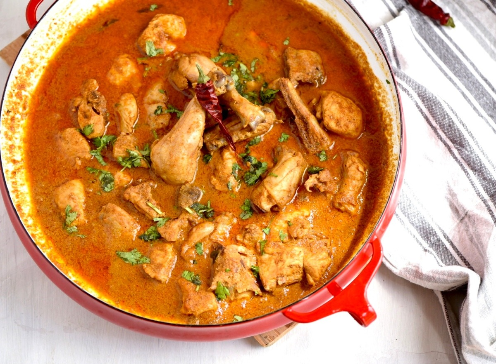

Kyckling curry

det här är vad du behöver för att göra kyckling curry
500 g kycklingbröst, skuren i bitar
1 stor lök, hackad
2 vitlöksklyftor, finhackade
1 msk riven ingefära
2 msk curry pulver
1 tsk gurkmeja
1 tsk spiskummin
400 ml kokosmjölk
2 msk matolja
Salt och peppar efter smak
Färsk koriander för garnering (valfritt)
Ris eller naanbröd för servering
steg för steg
Förbered ingredienserna: Skär kycklingbrösten i bitar och hacka löken, vitlöken och riv ingefäran.
Stek lök och kryddor: Hetta upp matoljan i en stor stekpanna eller gryta på medelhög värme. Tillsätt den hackade löken och fräs tills den är mjuk och genomskinlig, cirka 5 minuter. Tillsätt vitlök, riven ingefära, curry pulver, gurkmeja och spiskummin. Fräs i ytterligare 1-2 minuter tills kryddorna är doftande.
Tillsätt kycklingen: Lägg i kycklingbitarna i pannan och stek tills de är brynta på alla sidor, cirka 5-7 minuter.
Tillsätt kokosmjölk: Häll i kokosmjölken och rör om för att kombinera allt. Låt det sjuda på låg värme i cirka 15-20 minuter, eller tills kycklingen är genomkokt och såsen har tjocknat något. Rör om då och då.
Smaka av: Smaka av med salt och peppar efter behov. Om du vill ha en starkare currysmak kan du tillsätta mer curry pulver.
Servera: Garnera med färsk koriander om så önskas. Servera kyckling curryn varm tillsammans med ris eller naanbröd.
kalorier
Ingrediens
Kalorier (per 100g)
Kycklingbröst
165
Lök
40
Vitlök
149
Ingefära
80
Curry pulver
325
Gurkmeja
354
Spiskummin
375
Kokosmjölk
230
Matolja
884
Tillbaka till huvudsidan